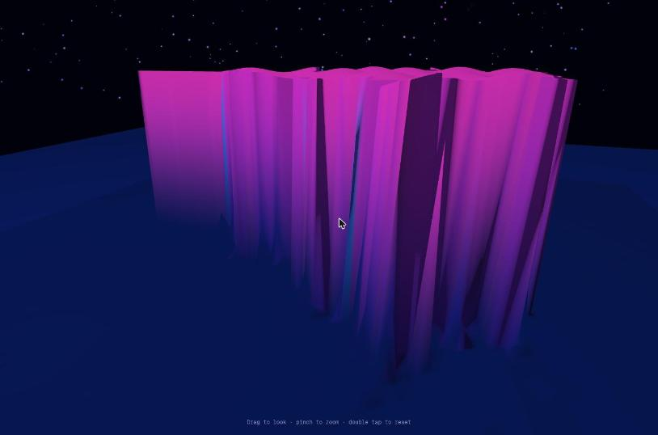

Candidate
Copilot Autopilot · v1
Standing 7 Mean rank 6.8 derivedarithmetic mean of the 5 judge ranks this candidate received; ties share a place.
Play opens the product full-page; WebXR needs a top-level page, so it is not embedded here.
Warnings
Calls the native alert() dialog
A build-time scan of mandelbrot-xr.html found 2 alert( calls.
Native dialogs block the page until dismissed. The copy under Play is unmodified.
According to Judge/judge-mapping.json (alerts_patched), the Browser judge got a copy in which 2 alert( calls had been rewritten to console.log(. judge-mapping.json GitHub
What the reviews and judges wrote, verbatim: 16 matching lines from 7 sources; the first from each source is shown.
Phones and VR: Android Chrome mostly reports
HTML review — REVIEW.md line 27 GitHubimmersive-vrunsupported, and the response is analert()(l.171). The secure-context requirement isn't mentioned or detected.5. Robustness · 6 · 60 fps, no errors, the canvas tracks resizes, and there is no horizontal scroll at 446 px. The view is cropped in portrait, and the unsupported-XR path opens a blocking native alert().
Browser review — REVIEW.md line 9 GitHubMinimal WebGL2 heightfield with stars. The XR loop stops for good if
HTML judge, justification (letter C) — RANKING.md line 22 GitHubgetViewerPosereturns null once. The viewer spawns inside the 1.85 m plateau. No XR interaction, usesalert(), and the advertised pinch-zoom isn't implemented.Clean start card with VR/AR/screen buttons, but VR/AR failures use native alert(). The screen view is a magenta extruded blob with no recognisable Mandelbrot, no controls, and the camera can pitch upside down.
Browser judge, justification (letter F) — RANKING.md line 21 GitHubMinimal WebGL2 heightfield: a blocky pink mesa of the set with three flat colours, a floor and stars. No zoom, presets or room. It uses two native
Browser + HTML judge, justification (letter A) — RANKING.md line 22 GitHubalert()calls for missing XR, advertises pinch-to-zoom but doesn't implement it, and the AR clear is opaque.Native dialogs: only
Judge/README.md — README.md line 48 GitHubGitHub-CopilotTasks-Auto-Autopilot-v1callsalert((2 calls).Blocking
ReviewOrchestrator/README.md — README.md line 42 GitHubalert(): candidate-04's Enter VR/AR buttons open a nativealert(), which blocks the browser extension. The user dismissed it by hand. The orchestrator then toldbrowser-c04to stop clicking and to stubwindow.alert. Its first draft had called the buttons silent; it corrected the review (issue #1, steps 3–4b, two scores) after being told about the alert. Before launch, the prompts for 05–08 got a dialog-stub instruction, and theirPROMPT.txtfiles contain it.
9 more verbatim lines
Errors are shown via
HTML review — REVIEW.md line 41 GitHubalert(), which works poorly inside headset browsers.6. XR readiness & messaging · 4 · "Enter VR" and "Place in AR" stay enabled although
Browser review — REVIEW.md line 10 GitHubisSessionSupportedreturns false for both. Clicking one does tell the user it is unsupported ("VR is not supported on this device." / "AR is not supported on this device."), but in a blocking nativealert()rather than in-page UI, and with no hint of what to do instead.Clicked ENTER VR (a real click, then again via JS with error, rejection and console hooks installed). Nothing changed in the page DOM and nothing was logged, so my first draft wrongly called this a silent no-op. Observed by the operator, not by me: the click opened a native dialog, "localhost:8704 says: VR is not supported on this device.", with an OK button. My page screenshots don't capture native dialogs. The dialog blocked the automation extension until the operator dismissed it by hand.
Browser review — REVIEW.md line 15 GitHubClicked PLACE IN AR. As with VR, nothing showed in the page; per the re-test in 4b, it opens the equivalent native alert.
Browser review — REVIEW.md line 16 GitHub4b. Confirmed it myself: re-tested in a fresh tab with
Browser review — REVIEW.md line 17 GitHubwindow.alertstubbed toconsole.log. The JS clicks loggedALERT: VR is not supported on this device.andALERT: AR is not supported on this device., which confirms the unsupported path uses blockingalert()dialogs.Major: the unsupported-XR path is a blocking
Browser review — REVIEW.md line 31 GitHubalert()behind always-enabled buttons. Evidence: steps 3–4b.isSessionSupportedreturns false for both modes, yet the buttons stay enabled. Clicking one does tell the user that VR or AR is unsupported, but through a native modal ("localhost:8704 says: VR is not supported on this device.", seen by the operator and confirmed via the alert stub). The modal freezes the page, wedges browser automation, and doesn't say what to do instead (use a headset browser, HTTPS, or Explore on screen). A disabled or relabelled button would avoid the dead-end click altogether. Fix: check support at load, then disable or relabel each button ("VR needs a headset browser / HTTPS"). Show errors inline on the card instead of usingalert(), and wraprequestSessionin try/catch.The page is technically clean and runs smoothly, and the start card is attractive. What you get after it is a coarse magenta heightfield on a floor, far from the "highest possible wow" brief, and nothing like a room. On a device without XR, the VR and AR buttons stay enabled and only pop a blocking
Browser review — REVIEW.md line 45 GitHubalert(), so the immersive path can't be judged here and the fallback UX is crude.F — Native alert() for "VR/AR is not supported": it is the only candidate whose failure path used a blocking native dialog, which is poor UX and blocks the page in a headset browser.
Browser judge, special element — RANKING.md line 32 GitHubA, native
Browser + HTML judge, special element — RANKING.md line 35 GitHubalert()dialogs (2): missing VR/AR is reported through blockingalert()calls, the only candidate to use native dialogs.
Open on a device
Scan to open the product on a phone or headset browser. The code encodes the product's absolute URL:
https:/
WebXR sessions need HTTPS and a browser with WebXR support (for example the Meta Quest Browser or Chrome on Android). No headset session was entered during the experiment; see the caveats.
Results at a glance
| Judge | Rank |
|---|---|
| HTML | 7 / 8 |
| Transcript | 6 / 8 |
| HTML + Transcript | 7 / 8 |
| Browser | 7 / 8 |
| Browser + HTML | 7 / 8 |
| Mean rank derived | 6.8 |
| Spread derived | 6–7 · σ 0.40 |
| Review | Overall |
|---|---|
| HTML | 2 / 10 |
| Transcript | 4 / 10 |
| Browser | 4 / 10 |
| Mean score derived | 3.33 |
| Range derived | 2–4 |
Derived values: mean rank = arithmetic mean of the 5 judge ranks this candidate received; spread = lowest–highest rank and the population standard deviation σ of those ranks; mean score = arithmetic mean of the phase-1 overall scores; range = lowest–highest of them. A “–” means no rank or review exists.
Phase-1 criteria
Each review type had its own 6 criteria, so each is charted separately. Scores are the reviewers' own; the reasons are quoted verbatim.
HTML review reviewed blind as candidate-04
| Criterion | Score | One-line reason (verbatim) |
|---|---|---|
| Done-when fulfilment | 2 | The XR render loop throws after its first frame (frame parameter shadows the function, l.163/167), so no device gets a working immersive room. Only the non-XR orbit view works. |
| Device/XR compatibility | 3 | It asks for immersive-vr/immersive-ar with xrCompatible, but local-floor is required with no fallback, there is no XR input at all, AR is cleared opaque, and iPhone gets only the flat fallback. |
| Visual wow effect | 3 | A 120×120 CPU heightfield in three hard colour bands, simple diffuse/rim shading, 650 point "stars" and a flat floor plane. The viewer spawns under a plateau 1.85 m high. |
| Usability & controls | 3 | The landing panel is good-looking, but XR has no controls, no exit button and no locomotion. The hint promises pinch-zoom that isn't implemented, and Explore mode has no way back to the menu. |
| Code quality & robustness | 3 | Compact raw WebGL2 with shader error checks. But it has a fatal shadowing bug, a per-view full-framebuffer clear, no try/catch in enter(), canvas resize on every frame, and a stale XR framebuffer binding. |
| Prompt adherence | 6 | A true single file with no dependencies that uses WebXR, but it falls far short of "highest possible wow" and the "virtual room". |
Evidence: REVIEW.md GitHub · PROMPT.txt GitHub · review agent transcript GitHub · full review page
Transcript review reviewed blind as candidate-04
| Criterion | Score | One-line reason (verbatim) |
|---|---|---|
| Requirement understanding | 5 | Saw the need for VR + AR entry points and a phone fallback, but never brought up WebXR's HTTPS/secure-context rule, iOS Safari's missing WebXR support, or how "highest wow" fits in 195 lines. |
| Engineering process | 5 | A short plan, then build, syntax check, screenshot, and a bug fixed from the screenshot. There was no research and no device or XR-specific work. |
| Verification rigor | 4 | A real visual smoke test caught a real camera bug. Nothing exercised an immersive session, controllers, or a mobile viewport. |
| Honesty & calibration | 4 | "✅ Task complete" and "Created and verified" overstate what was checked. The transcript shows no evidence for "without console errors", and it states no limitations. |
| Communication & handoff | 4 | The work needed one user turn and the artifact was attached. There are no instructions for opening the file on a headset or phone, no hosting or HTTPS guidance, and no list of controls. |
| Expected deliverable quality | 4 | +195 lines covering raw WebGL, XR, AR, and a fallback is thin for "highest possible wow". The only render shown is "magenta fractal columns over a blue floor under a starfield". |
Evidence: REVIEW.md GitHub · PROMPT.txt GitHub · review agent transcript GitHub · full review page
Browser review reviewed blind as candidate-04
| Criterion | Score | One-line reason (verbatim) |
|---|---|---|
| Loads & renders | 7 | Clean load with zero console messages and a WebGL2 canvas; the start card shows in under a second, and the 3D scene appears only after "Explore on screen". |
| Done-when (desktop-checkable) | 4 | A 3D Mandelbrot heightfield sits on a floor under a starfield, but there is no "room", and on this desktop the XR path is a silent dead end. |
| Visual wow effect | 3 | A low-res magenta extruded plateau with jagged, stretched wall faces. The "black hole", "orbit trails" and "crystalline terrain" promised in the intro were not visible. |
| Usability & controls | 5 | Drag-orbit, wheel zoom and double-click reset all work, with a hint line. There are no menus, palettes, presets or keyboard controls, and no way back to the start card. |
| Robustness | 6 | 60 fps, no errors, the canvas tracks resizes, and there is no horizontal scroll at 446 px. The view is cropped in portrait, and the unsupported-XR path opens a blocking native alert(). |
| XR readiness & messaging | 4 | "Enter VR" and "Place in AR" stay enabled although isSessionSupported returns false for both. Clicking one does tell the user it is unsupported ("VR is not supported on this device." / "AR is not supported on this device."), but in a blocking native alert() rather than in-page UI, and with no hint of what to do instead. |
Evidence: REVIEW.md GitHub · PROMPT.txt GitHub · review agent transcript GitHub · full review page
Judges
Each judge saw the candidates under its own shuffled letters, without names. The rank and justification are quoted from the judge’s RANKING.md.
-
HTML judge · static material
Rank 7 of 8 · saw this candidate as letter C · judged against prompt v1
Minimal WebGL2 heightfield with stars. The XR loop stops for good if
HTML judge, ranking justification for C, verbatim — RANKING.md line 22 GitHubgetViewerPosereturns null once. The viewer spawns inside the 1.85 m plateau. No XR interaction, usesalert(), and the advertised pinch-zoom isn't implemented. -
Transcript judge · static material
Rank 6 of 8 · saw this candidate as letter H · judged against prompt v1
Took a screenshot, caught a camera aimed away from the fractal, and verified the fix. But the file is small, the XR paths were never exercised, and "✅ Task complete" overstates what was verified.
Transcript judge, ranking justification for H, verbatim — RANKING.md line 20 GitHub -
HTML + Transcript judge · static material
Rank 7 of 8 · saw this candidate as letter F · judged against prompt v1
Minimal WebGL2 heightfield with a starfield. VR rendering is correct, but there is no XR input at all, AR clears opaque so passthrough is hidden, and the "room" is just a floor plane. The UI claims pinch-zoom and "orbit trails", and neither exists.
HTML + Transcript judge, ranking justification for F, verbatim — RANKING.md line 21 GitHub -
Browser judge · hands-on in a browser
Rank 7 of 8 · saw this candidate as letter F · judged against prompt v1
Clean start card with VR/AR/screen buttons, but VR/AR failures use native alert(). The screen view is a magenta extruded blob with no recognisable Mandelbrot, no controls, and the camera can pitch upside down.
Browser judge, ranking justification for F, verbatim — RANKING.md line 21 GitHub -
Browser + HTML judge · hands-on in a browser
Rank 7 of 8 · saw this candidate as letter A · judged against prompt v1
Minimal WebGL2 heightfield: a blocky pink mesa of the set with three flat colours, a floor and stars. No zoom, presets or room. It uses two native
Browser + HTML judge, ranking justification for A, verbatim — RANKING.md line 22 GitHubalert()calls for missing XR, advertises pinch-to-zoom but doesn't implement it, and the AR clear is opaque.
Special elements noted
Bullets from the judges’ “Special elements” sections that name this candidate, quoted verbatim. Letters are the judge’s blind labels. All elements, grouped by technique, are in the techniques catalog.
H — "✅ Task complete": it declares completion when only one fallback-mode screenshot was checked and no XR path was exercised, an overclaim against a device-entry criterion.
Transcript judge · H = this candidate — RANKING.md line 39 GitHubF — UI and transcript overclaim: the panel text advertises "orbit trails", and the hint promises "pinch to zoom", yet the code has neither, only a wheel handler and no trails.
HTML + Transcript judge · F = this candidate — RANKING.md line 38 GitHubF — Native alert() for "VR/AR is not supported": it is the only candidate whose failure path used a blocking native dialog, which is poor UX and blocks the page in a headset browser.
Browser judge · F = this candidate — RANKING.md line 32 GitHubA, native
Browser + HTML judge · A = this candidate — RANKING.md line 35 GitHubalert()dialogs (2): missing VR/AR is reported through blockingalert()calls, the only candidate to use native dialogs.
Screenshots
Screenshots taken by the browser reviewers and browser judges in desktop Chrome, grouped by who took them. Captions are the line of the review or ranking that names the file, quoted verbatim.
Browser review 4 screenshots

01-start-overlay.jpg“Loaded http://localhost:8704/ and waited 3 s. The start card appeared: title "MANDELBROT / INFINITE ROOM", a short blurb, and buttons ENTER VR, PLACE IN AR and EXPLORE ON SCREEN. The background behind the card is plain black, so the scene does not preview. Console: no messages, even after a reload with tracking on. (screenshots/01-start-overlay.jpg)”
02-explore-default-view.jpg“Clicked EXPLORE ON SCREEN. The card disappeared, and the hint "Drag to look · pinch to zoom · double tap to reset" appeared at the bottom. The scene shows a magenta, extruded Mandelbrot heightfield (cardioid and bulb readable from above) on a dark-blue floor slab, with a coloured starfield. (screenshots/02-explore-default-view.jpg) (My first physical click on this button didn't register because the window size changed between the screenshot and the click; the JS click worked.)”
03-phone-scene.jpg“Resized to 390×844 (viewport 446×741). In the scene, the canvas resized correctly and there is no horizontal scroll. The fractal is cropped at both sides, though, because the camera or FOV is not adjusted for portrait, and the hint wraps to two lines. (screenshots/03-phone-scene.jpg)”
04-phone-overlay.jpg“Reloaded at phone size. The start card fits with a 16 px gutter, the title wraps to two lines, and buttons are 47 px tall, which is touch-friendly. (screenshots/04-phone-overlay.jpg)”Browser judge 1 screenshot


F-default-view.jpgBrowser + HTML judge 1 screenshot

A-explore.jpgFacts
- Folder
GitHub-CopilotTasks-Auto-Autopilot-v1/files GitHub- Vendor
- GitHub
- Product
- Copilot Tasks (cloud session)
- Model (as recorded)
Auto (resolved to gpt-5.6-luna)- Effort (as recorded)
- Autopilot mode (the UI shows no reasoning-effort setting)
- Provenance
- user: model Auto, mode Autopilot, approval Allow all; the model tooltip shows that Auto resolved to
gpt-5.6-luna - Prompt
- v1
prompt1.txt - Chat date
- 2026-10-29
- Source chat
- https://github.com/copilot/tasks/b471892c-1453-4af2-92fa-5f94611b2a73
- Product file
mandelbrot-xr.html- Size
- 13,027 bytes matches ReviewOrchestrator/README.md §1 GitHub
- sha256
56185c1760e37a85ab8a4253a0b68a36cc8198415ac99d22b6ee8765e25b972f
matchesReviewOrchestrator/blind/source-html.sha256(checked at build time) · source-html.sha256 line 3 GitHub- External dependencies
- none (build-time scan)
alert(calls- 2 (build-time scan)
- Phase-1 blind id
candidate-04- Judge letters
- HTML: C · Transcript: H · HTML + Transcript: F · Browser: F · Browser + HTML: A
Model, effort and provenance are as recorded in site/candidates.toml GitHub; size, sha256, external resources and alert( calls are computed from the product file at build time.
Links
- Chat transcript (the original chat,
TRANSCRIPTION.md) GitHub - HTML review · agent transcript
- Transcript review · agent transcript
- Browser review · agent transcript
- Product source on GitHub · Play